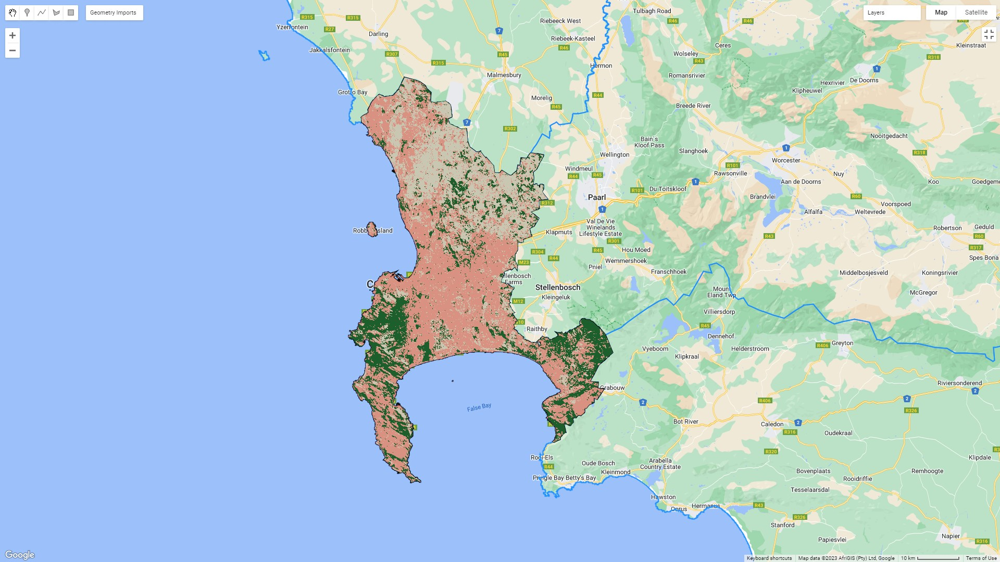
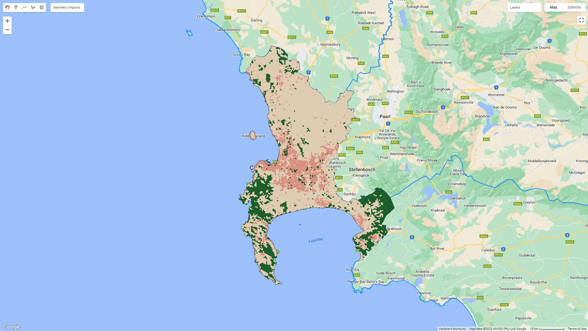

7 Week 7
8 Week 7: Classification - The Big Questions
8.1 Summary
This week we continued with more classification algorithms in GEE. We focused on object-based image analysis and sub-pixel analysis, which I will describe below.
8.1.1 Sub-pixel Analysis
This determines the proportion of each landcover type per pixel. Essentially, it works by comparing the reflectance values in each pixel to the ‘ideal’ values of a spectrally pure endmember for that landcover class. The algorithm then infers what is likely to be the dominant landcover class in that pixel, based on probability. Usually, spectrally pure endmembers will be determined through laboratory measurements or controlled experiments. Below is an example of running sub-pixel analysis on Cape Town using polygons that I drew on a Landsat colour composite to classify landcover. From visual inspection, the algorithm performed reasonably well, although large stretches of the nature reserve in Cape Point (the peninsula in the South) have been classified as urban.

8.1.2 Object-based Image Analysis
Object-based image analysis is almost the inverse of sub-pixel analysis: Instead of trying to determine what the landcover class within each pixel might be, it groups pixels together. It does this by identifying areas that are similar to each other and creating shapes of similar (homogeneous) or different (heterogeneous) ‘superpixels’. Here is the output of an object-based image analysis that used Simple Non-Iterative Clustering (SNIC) to create a grid of super pixels (groups of pixels). It then assigned landcover classes using CART:

From visual inspection, this actually performed better in identifying that Cape Point is not urban, but it has probably under-estimated the amount of natural vegetation and urban area in the metro as a whole.
In order to formally assess the accuracy I would need to split the data into a training and testing set last and evaluate its performance. I haven’t done that, but I outline some of the means for evaluating performance below.
8.1.3 Accuracy
There are a number of ways to measure the accuracy of a model in remote sensing and machine learning. Which measure (or combination of measures) you choose depends on the application, but some of the most common are user’s accuracy, producer’s accuracy and F1 score. These are all derived from a confusion matrix – basically, a table that shows the number of correctly and incorrectly classified pixels for each class.
The user’s accuracy is the proportion of pixels that are correctly classified as a class out of all pixels that are classified as that class. It indicates how reliable the classification map is for a given class. It’s also called precision, and it’s calculated as follows:
\[User's\ Accuracy= \frac{True\ Positive}{True\ Positive+False\ Positive}\]
The producer’s accuracy is the proportion of pixels that are correctly classified as a class out of all pixels that belong to that class in reality. It indicates how well the classification map represents a given class. It’s also called recall, and it’s calculated like this:
\[Producer's\ Accuracy= \frac{True\ Positive}{True\ Positive+False\ Negative}\]
The f1 score is the harmonic mean of user’s accuracy and producer’s accuracy for a class. It balances both measures and gives a single value that balances both. It’s calculated like this:
\[F1= \frac{2 * User's\ Accuracy * Producer's\ Accuracy}{User's\ Accuracy + Producer's\ Accuracy}\]
I prefer the terms producer’s accuracy and user’s accuracy because they make more intuitive sense to me, but precision and recall are more commonly used outside of a remote sensing context.
8.2 Applications
Advanced classification methods for land use and land cover have really expanded recently. Brown et al. (2022) created a model that updates global land use and land cover in near real-time. They use a deep learning algorithm to do it, and it’s hosted on Earth Engine – you can take a look here.
Elsewhere, sub-pixel analysis has been used for urban inundation mapping (essentially, maps of flooded areas in cities). Li et al. (2020) use deep learning in combination wiht Elman neural networks for sub-pixel analysis to improve the accuracy of flood mapping using Landsat imagery.
Elsewhere, Object-Based Image Analysis has recently been used to map informal settlements by Matarira et al. (2022). They used both optical imagery from Sentinel-2 and Planetscope, along with SAR data from Sentinel-1, to identify informal settlements in Durban, South Africa.
8.3 Reflections
It’s quite incredible to see how quickly the possibilities of remote sensing are expanding. Google Earth Engine has really opened up the possibilities, and it feels like there’s been a real explosion in the discipline in recent years. I think this is both exciting and intimidating: these recent advances are so significant, and have such obvious utility, that it feels really exciting to be able to understand and undertake some of them. The paper that I described above that identifies informal settlements in Durban, for example, employs methods that I have learnt on this course and it doesn’t feel like a massive stretch for me to be able to do something similar.
At the same time, I feel like I’m just scratching the surface – and the world of possibilities is really dizzying. I theoretically understand what Li et al. (2020) have done for inundation mapping, although it’s a stretch, but the deep learning methods (and data infrastructure and pipelines) employed by Brown et al. (2022) are just dizzying. I guess it’s cool that I can really appreciate it now, at least, and I’m really pleased that I’ve started to gain some real applied insight into how to use remote sensing data – because I really think it has incredibly powerful applications for cities.